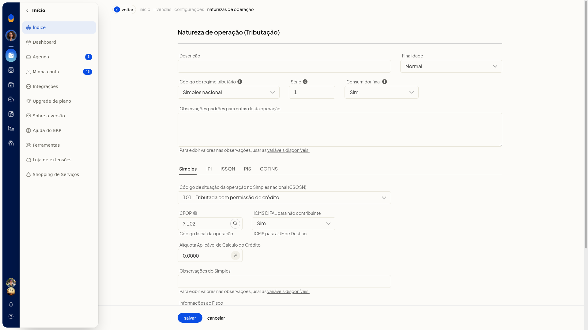
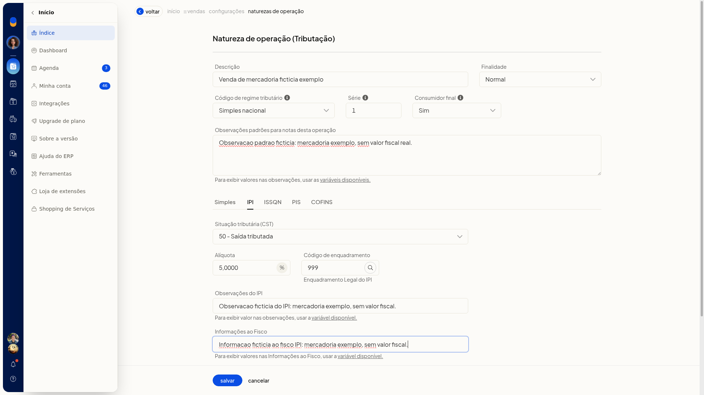
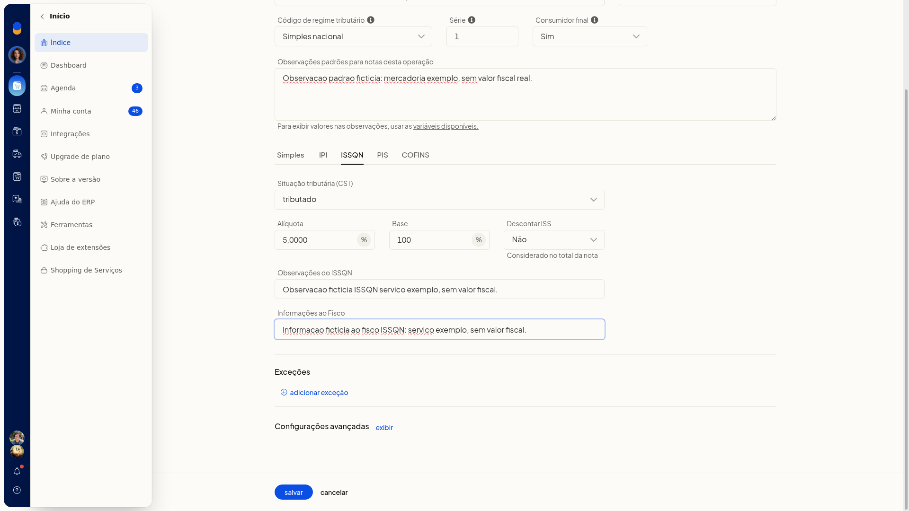
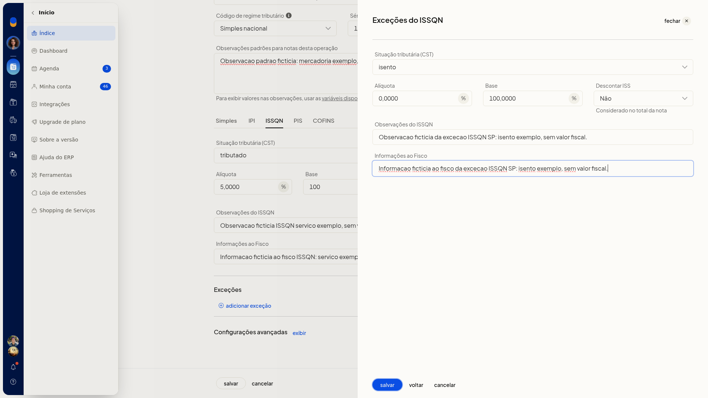

Naturezas de operação de saída
Importante
- Defina antes o regime da operação: Simples nacional, excesso de sublimite, Regime normal ou MEI.
- Para criar uma exceção, informe ao menos uma UF, um produto, uma origem ou um NCM. Sem um desses filtros, o assistente não avança.
- Com desoneração de ICMS sem motivo, informe o motivo da desoneração ou deixe Calcular ICMS Desonerado como Não.
Instruções
Cadastro pela tela
-
Acesse Configurações > Configurações ERP.
-
Abra a aba Notas Fiscais.

-
Clique em Naturezas de operação de saída (tributação). A lista mostra Descrição, CFOP, Padrão, Série e Consumidor final. Busque por descrição ou CFOP e use o filtro de naturezas ativas. O menu da linha mostra Clonar operação, Tornar padrão para NFC-e, Tornar operação de entrada, Enviar natureza para empresas e Inativar operação. Ao selecionar uma linha, a lista mostra Enviar naturezas para empresas e Excluir naturezas de operação.


-
Abra a inclusão de uma nova natureza. O formulário inicia com Finalidade Normal, CRT Simples nacional, Consumidor final Sim e, na tributação do Simples, CSOSN 400.

-
Informe a Descrição e revise Finalidade, CRT, Série e Consumidor final. Nenhum campo do formulário é obrigatório.
-
Preencha o CFOP e as Observações. Nas observações há variáveis disponíveis. Preencha também Benefício fiscal e os textos de observação e fisco, se forem usar.
Dados gerais
- Descrição
- Finalidade: Normal, Devolução, Bonificação ou Remessa
- CRT: Simples nacional, excesso de sublimite, Regime normal ou MEI
- Série
- Consumidor final: Sim ou Não
- CFOP
- Observações
- Benefício fiscal
-
No Simples Nacional, escolha o CSOSN entre 101, 102, 103, 201, 202, 203, 300, 400, 500 e 900. No CSOSN 101, preencha Alíquota Aplicável de Cálculo do Crédito no formato 0,0000. Revise DIFAL não contribuinte (Sim ou Não): ICMS para a UF de destino.

-
Se a operação for de Regime normal, troque o CRT. Os códigos passam a ser CST de ICMS: 00, 10, 20, 30, 40, 41, 50, 51, 60, 70 e 90. O CST 10 trata substituição tributária. Os motivos de desoneração são 1 e de 3 a 12.
-
Abra as opções avançadas e revise os parâmetros abaixo. Em Preço considerado, a seleção inicial é Preço de venda ou promocional; há alternativa de custo. Em ZFM, a seleção inicial é Não, com alternativas de desoneração para todos ou só origem nacional. Em Redução BC ICMS-ST, use Padrão ou Antes de somar o IPI. Na composição dos itens no total da NF-e, a opção selecionada é Compõem total da nota fiscal.
Opções avançadas
- Preço considerado
- Enviar expedição: Sim ou Não
- Receita DRE: Sim ou Não
- CMV DRE: Sim ou Não
- Compra produtor rural: Sim ou Não
- lançamento ou reserva de estoque
- Alíquota funrural
- Descontar funrural: Sim ou Não
- ZFM
- Redução BC ICMS-ST
- Descontar desoneração: Sim ou Não
- composição dos itens no total da NF-e
- Nas abas de IPI, PIS, COFINS e ISSQN, escolha a situação tributária, a alíquota e a base.
- Clique em Salvar. A natureza fica com finalidade, regime, série, consumidor final e impostos definidos.
IPI, PIS, COFINS e ISSQN
- CST do IPI: ao abrir a aba, o valor é 50
- CST do PIS e CST do COFINS: 01 a 09, 49, 50 a 56, 60 a 67 e 70 a 73
- CST do ISSQN: tributado, isento ou outra situação
- Alíquota do ISSQN: formato 0,0000
- Base de cálculo do ISSQN: formato 0,0000
- Descontar ISS: Sim ou Não. Considerado no total da nota


Regras de exceção pela tela
-
No formulário da natureza, na aba do imposto (ICMS, IPI, PIS, COFINS ou ISSQN), abra a inclusão de uma exceção.
-
No filtro, marque ao menos uma UF (AC a TO, além de EX) ou informe produto, origem (0 a 8) ou NCM.


-
No passo do imposto, informe situação, alíquota, base e observações. No ISSQN, use Descontar ISS (Sim ou Não) e, se precisar, as observações da exceção e as informações ao fisco. Para descartar, clique em Cancelar: você volta à aba do imposto e a lista de exceções permanece sem a nova linha.


Bases de cálculo em Configurações adicionais de tributação
-
Na lista de naturezas de operação de saída, clique em Configurações.
-
Revise as bases, o frete, o desconto e o valor aproximado dos impostos.

-
Clique em Salvar para gravar a revisão. Cancelar fecha a tela e retorna à lista sem gravar a alteração.
Opções da tela
- Impostos e frete na primeira parcela: cobra impostos e frete na primeira parcela das notas fiscais de saída, pedidos de venda e propostas comerciais
- Considerar valor do frete na base de cálculo do IPI
- Remover ICMS na base de cálculo do PIS/COFINS
- Remover também o FCP
- Remover ICMS DIFAL na base de cálculo do PIS/COFINS
- Remover também o FCP do DIFAL
- Considerar desconto do item na base de cálculo do ICMS ST
- Considerar desconto do item na base de cálculo do IPI
- Calcular automaticamente o valor aproximado dos impostos: Sim - Em todas as notas fiscais, Sim - Apenas em notas fiscais para consumidor final ou Não
- Subtrair e recalcular valor do IPI em vendas originadas do e-commerce: Não, Apenas para pedidos importados do e-commerce ou Para pedidos importados do e-commerce e recebidos por API
- Natureza de operação Tributação
Informações adicionais
- Trocar o CRT de Simples nacional para Regime normal substitui o CSOSN pelo CST de ICMS.
- O CSOSN 101 exibe Alíquota Aplicável de Cálculo do Crédito.
- Cancelar uma exceção preenchida volta à aba do imposto sem adicionar a linha.